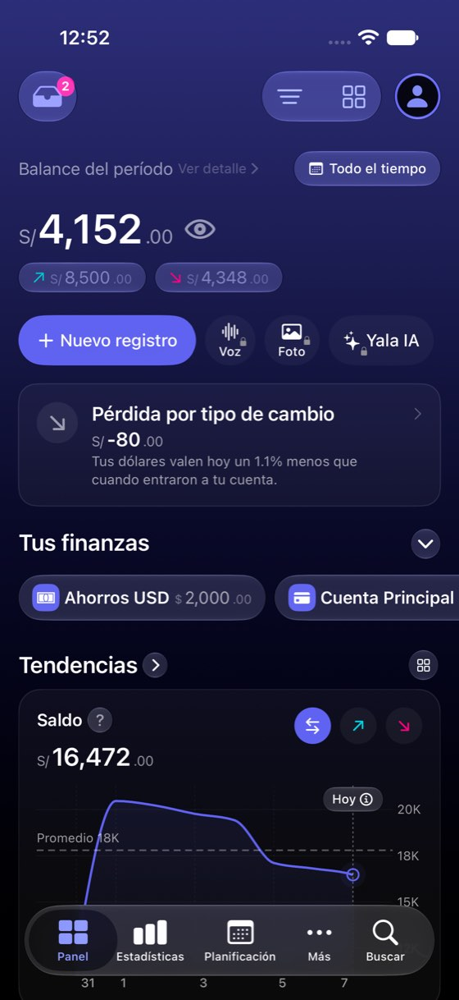
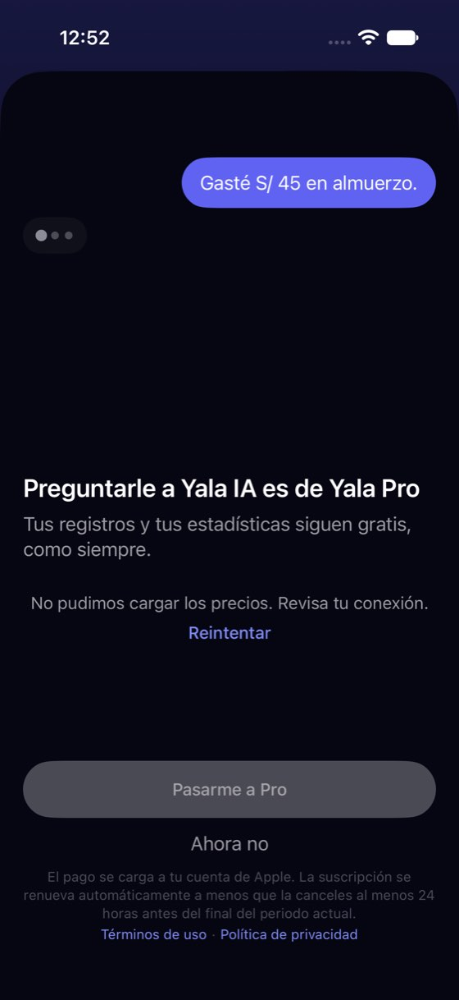
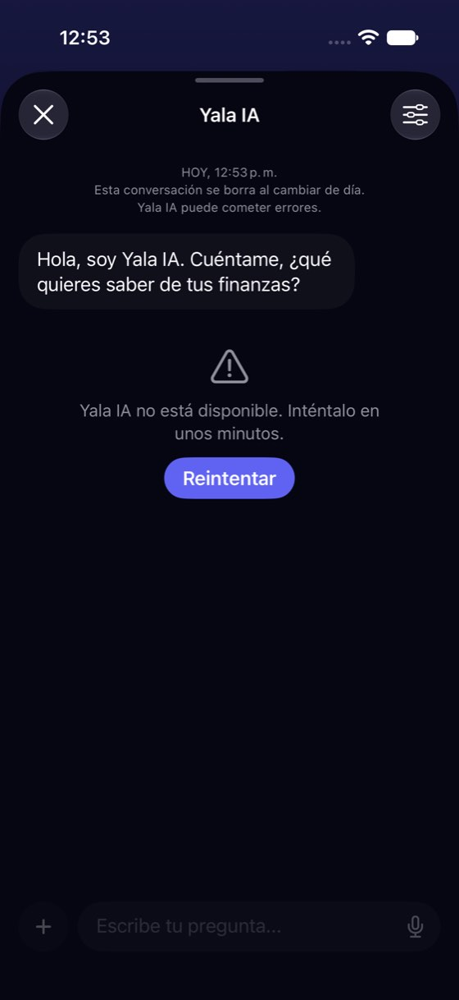
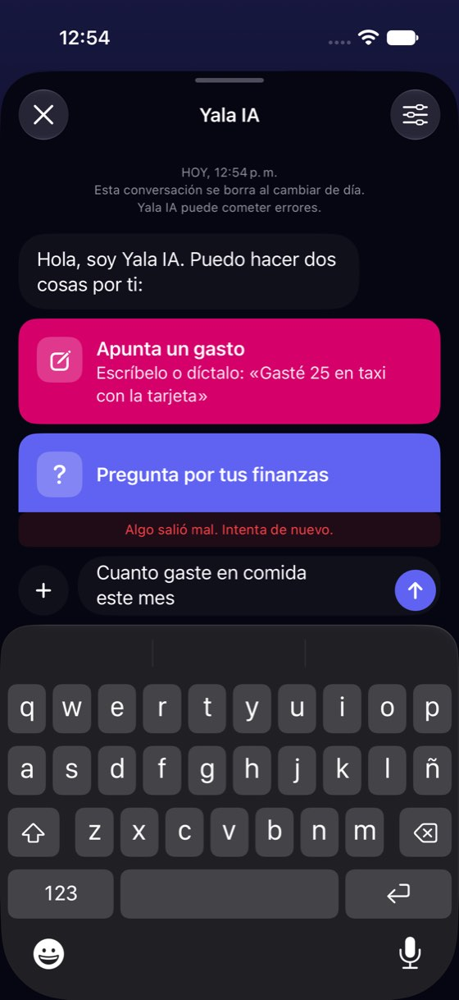
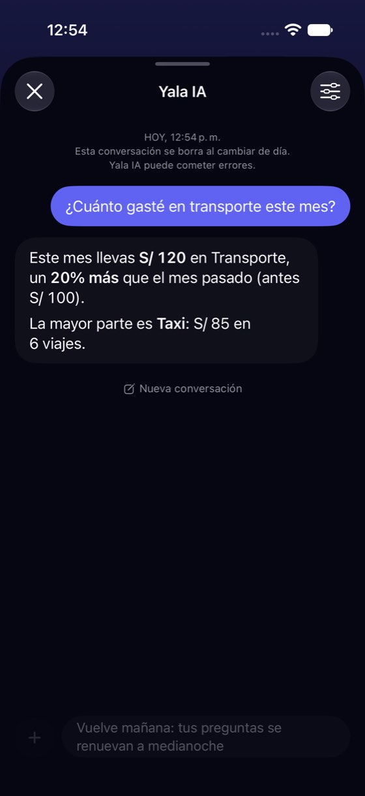

Yala IA sin conexión o sin Pro: los mensajes no dicen lo que pasa y no dejan salida
Hoy
Capturas del simulador (app de origin/2.3, semillas de prueba). Pasos hoy: sin salida: la caja apagada; «Reintentar» repite lo mismo





De dónde sale
- Captura Captura 44: chat abierto sin servidor: «Yala IA no está disponible. Inténtalo en unos minutos.» y la caja gris.
- Captura Captura 52: con sugerencias de prueba, enviar sin servidor da «Algo salió mal. Intenta de nuevo.».
- Captura Captura 41: sin Pro, el muro: «No pudimos cargar los precios. Revisa tu conexión», «Pasarme a Pro» apagado.
- Código
ChatAssistantViewModel.swift:26:isAIAvailable = !suggestionsFailed;:322-326: si las sugerencias no llegan, todo el chat queda «no disponible», sin mirar la red. La red solo se mira al enviar (ChatAssistantService.swift:107). - Hipótesis El simulador tiene red y no tiene servidor: «sin conexión de verdad» da el mismo camino según el código, no medido en un iPhone en modo avión.
Las opciones
De 3 a 5 alternativas con el mismo caso. Desliza cada recorrido; el anillo cian marca dónde toca Lucía.
Decir «sin conexión» y ofrecer lo que sí se puede
Si el teléfono no tiene conexión, el chat lo dice con esas palabras (la app ya tiene el texto «Necesitas conexión para usar Yala IA») en vez de «no está disponible, inténtalo en unos minutos», y ofrece apuntar a mano. Si la conexión hay y el servidor falla, se queda el mensaje de hoy.
Esta conversación se borra al cambiar de día.
A favor
- Dice la verdad: el problema es la conexión, no Yala IA.
- Deja una salida útil (apuntar a mano) en vez de una pantalla muerta.
- El texto ya existe; falta usarlo al abrir.
En contra
- Hay que distinguir «sin conexión» de «servidor caído» al abrir (la app ya vigila la red al enviar).
La pregunta espera y se envía al volver la conexión
Sin conexión, la caja sigue activa. Lo que Lucía escriba queda «En cola» y se envía solo cuando vuelve internet, con una notificación si la app está cerrada.
A favor
- No se pierde lo escrito.
- Parecido a cómo se comporta Mensajes.
En contra
- Gasta una pregunta del día sin que Lucía la vea salir.
- Necesita guardar la cola y una notificación: lo más caro.
Sin Pro: el muro dice lo gratis y no se queda sin salida
Sin Pro, tocar «Yala IA» abre el muro de siempre, pero sin conexión no deja un botón apagado y «No pudimos cargar los precios»: dice que el precio se verá al conectarse y ofrece lo que es gratis hoy (apuntar a mano y, en teléfonos con Apple Intelligence, anotar con Siri en el propio teléfono).
A favor
- Quita el callejón sin salida (botón gris y «Reintentar»).
- Hace visible que Siri funciona sin Pro donde hay modelo en el teléfono.
En contra
- Toca el muro de Pro, que es de StoreKit y tiene sus reglas de App Store.
- Lo de Siri solo vale en teléfonos compatibles: hay que decidirlo por aparato.
Solo los textos
«Yala IA no está disponible. Inténtalo en unos minutos» se divide en dos según la causa, «Algo salió mal» al enviar dice qué hacer, y la caja deja de decir solo «Escribe tu pregunta…» cuando también apunta gastos.
A favor
- Barato.
- Corrige un mensaje que hoy dice algo falso («en unos minutos»).
En contra
- Sigue sin salida útil: la caja apagada.
Lado a lado
La última pantalla de cada recorrido, frente a hoy.
Comparación
| Opción | Pasos para el caso (maqueta) | Esfuerzo | Riesgo | Reabre |
|---|---|---|---|---|
| Hoy | sin salida: la caja apagada; «Reintentar» repite lo mismo | — | — | — |
| F1 · Decir «sin conexión» y ofrecer lo que sí se puede | 1 toque a «Nuevo registro» (hoy: ninguno; la caja está apagada) | bajo | bajo | — |
| F2 · La pregunta espera y se envía al volver la conexión | 0 toques extra | alto | medio | — |
| F3 · Sin Pro: el muro dice lo gratis y no se queda sin salida | 1 toque a una alternativa (hoy: «Reintentar» o «Ahora no») | medio | medio | — |
| F4 · Solo los textos | Igual que hoy | bajo | bajo | — |
Lente de perfiles
Perfiles simulados, no entrevistas Los siete perfiles de la revisión del usuario nuevo, usados como lentes. riesgo alto de trabarse · medio · bajo.
| Perfil | Hoy | F1 | F2 | F3 | F4 |
|---|---|---|---|---|---|
| P1 · Migrante de Excel | — | — | — | — | — |
| P2 · Principiante abrumado | cree que Yala está rota | entiende qué pasa | no sabe cuándo llega | sabe qué puede hacer | sin salida |
| P3 · Anotador rápido que no lee | cierra y no vuelve | apunta a mano | — | apunta a mano | — |
| P4 · Experto de otra app | sabe que es la red, la app no lo dice | — | — | quería la IA | — |
| P5 · Llega por una invitación de grupo | — | — | — | — | — |
| P6 · Varias monedas y tarjeta | — | — | — | — | — |
| P7 · Texto grande, a veces en iPad | — | — | — | — | — |
Recomendación: F1
Decir «sin conexión» al abrir y ofrecer apuntar a mano. Usa un texto que ya existe y convierte una pantalla muerta en una salida. Para el muro de Pro, F3 es la pareja natural, pero toca StoreKit y conviene decidirla aparte.
Qué decide Jürgen
- ¿El chat distingue «sin conexión» de «servidor caído» al abrir (F1)?
- ¿El muro de Pro sin conexión ofrece lo gratis en vez de un botón apagado (F3)?
- ¿Se cambia el texto de la caja a «Pregunta o apunta un gasto…»?
Revisión por vistas 2.3 · Bandeja, Yala IA, correo del banco, Apple Pay y Siri. Maquetas en HTML con datos ficticios: no son la app. Pasos contados sobre las maquetas; los de «Hoy», en el simulador o en el código citado.